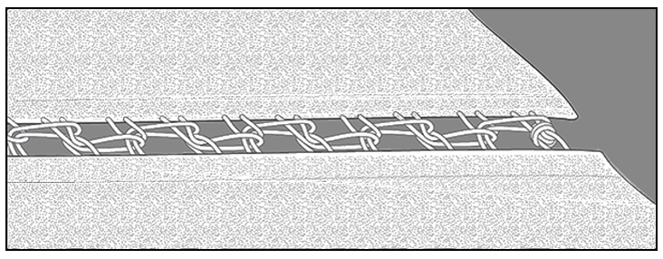
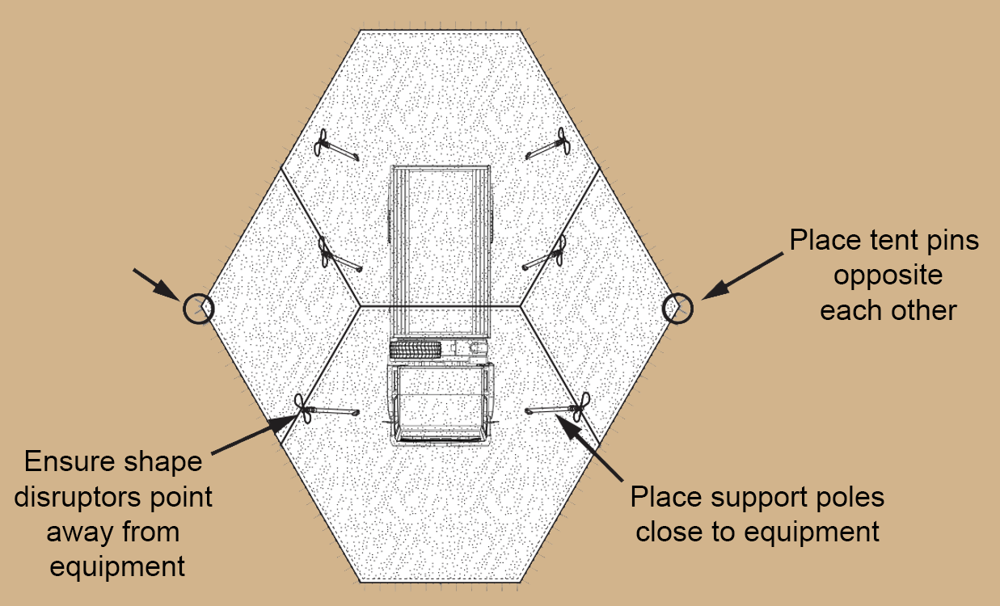

CRITICAL CONSIDERATIONS
This section details Important Information From Army Tactics, Techniques, and Procedures (ATTP) 3-34.39 - Camouflage, Concealment, and Decoys.
FOUR KEYS
- Maintain minimum of 2 ft between net assembly and equipment. This prevents net from assuming the same shape and thermal signature as equipment.
- Ensure there are no vertical lines. Sloping net over equipment minimizes sharp edges, which are more easily detectable.
- Pin net securely to ground. This ensures that net effectively disrupts equipment shape and absorbs and scatters radar energy.
- Ensure net is taut and not flapping with wind.

BECKET LACING
When joining screens using becket lacing, it is helpful to remember "long, long, short"

- After each short loop, run a long loop on screen 1 through a long loop on screen 2.
- Then run a long loop on screen 2 through next short loop on screen 1.
- Repeat "long, long, short" and knot last loop to secure.
DEPLOYMENT TIPS AND TRICKS
